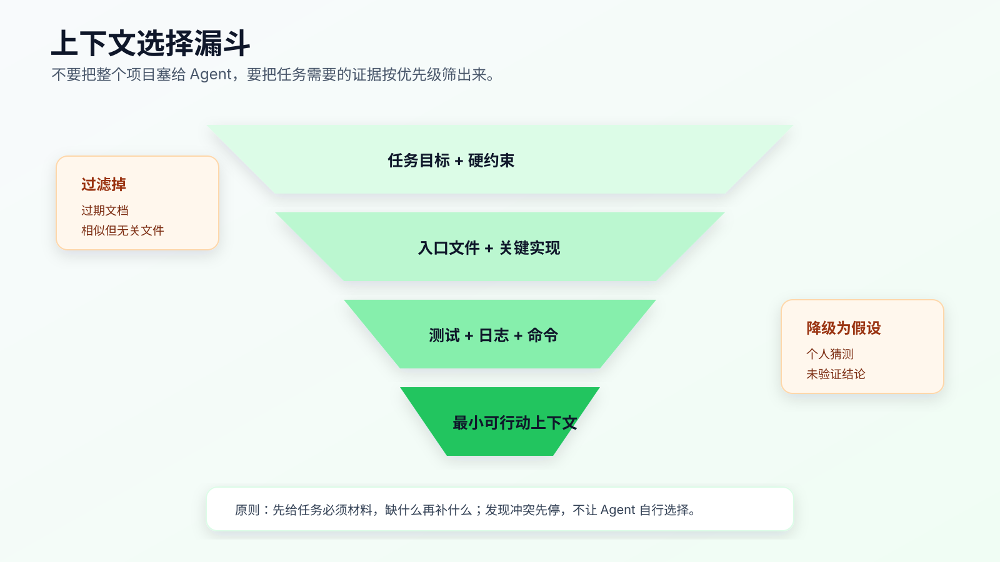
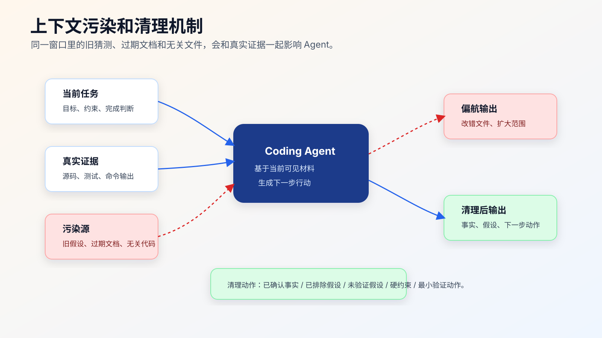

上下文工程：为什么不是塞越多代码越好
很多程序员第一次用 AI 改真实项目，会自然想到一个办法：多给它代码。
把相关目录贴进去，把文档贴进去，把报错贴进去，把历史聊天也贴进去。看起来越完整，AI 越应该懂项目。
实际经常相反。
上下文越多，模型能看到的信息越多，但噪音、旧结论、冲突规则、相似但无关的代码也会一起进来。Agent 不是把所有材料变成可靠事实，它会根据当前上下文里的线索生成下一步判断。你给它一堆材料，如果没有优先级和边界，它就可能被最显眼、最新、最相似但错误的线索带偏。
上下文工程不是“喂更多”，而是“给对、给少、给得有结构”。

为什么更多上下文会变差
真实项目里，错误上下文主要有五种。
第一种，相似但无关的文件。
比如你要修线上订单提交，仓库里同时有：
src/order/submit.ts
src/order/submit.legacy.ts
src/demo/order-submit.ts
docs/order-submit.md
test/order-submit.test.ts
如果 Agent 先读到 demo，它可能按 demo 逻辑改真实代码；如果先读到 legacy，它可能误以为旧接口仍是主路径；如果只读 docs，可能忽略当前实现已经偏离文档。
第二种，过期文档。
文档很有用，但文档会过期。尤其是接口、状态机、部署脚本、环境变量说明。Agent 如果把过期文档当作当前事实，修改方向会很危险。
第三种，冲突规则。
用户说“快速修好”，项目规则说“不要改公共接口”，历史对话里又有人说“可以重构”。这些指令混在一起，Agent 可能抓住最显眼的那条执行。
第四种，失败假设。
排障过程中，前几轮猜测如果没有被清理，会一直污染后续判断。比如一开始怀疑是缓存，后来日志证明不是，但对话里保留了大量缓存讨论，Agent 之后仍可能继续沿着缓存方向改。
第五种，无验证结论。
“应该是前端问题”“看起来是后端返回慢”“可能是 token 过期”，这些话如果没证据，就不能进入实现上下文。它们最多是待验证假设。
上下文工程的第一条原则是：不要把未验证判断和已确认事实混在一起。
Agent 需要的不是完整项目，而是任务视野
一次具体任务需要的上下文通常分成六层。
| 层级 | 内容 | 作用 |
|---|---|---|
| 任务目标 | 要改变的用户可见行为或代码行为 | 防止实现跑偏 |
| 硬约束 | 不能改的接口、目录、依赖、兼容规则 | 防止越界 |
| 入口文件 | 请求入口、页面入口、命令入口、模块入口 | 确定从哪里开始看 |
| 关键实现 | 业务逻辑、状态流转、核心函数 | 决定怎么改 |
| 验证材料 | 测试、复现步骤、日志、截图、命令 | 证明改动有效 |
| 项目规则 | 命令、目录、代码风格、完成报告 | 保持工程一致性 |
这六层比“把相关目录都给它”更有用。
例如修 session 过期后的首次提交失败，给 Agent 这些材料就足够开始：
## Objective
session 过期后重新登录，第一次提交资料表单应该成功。
## Constraints
- 不改变登录接口协议。
- 不改变 token 存储格式。
- 不吞掉非 401 错误。
## Candidate Files
- `src/auth/request.ts`
- `src/forms/ProfileForm.tsx`
- `test/auth-refresh.test.ts`
## Evidence
- 错误日志：`401 refresh token missing`
- 复现路径：登录 -> 等待 session 过期 -> 刷新 -> 提交表单
## Verification
- `npm test -- auth-refresh`
- 浏览器复现路径
如果 Agent 读完这些后发现缺上下文，再让它搜索和补充。不要一开始就把整个 src/ 目录塞进去。
上下文要有优先级
不是所有材料地位相同。
一个实用的优先级可以这样排：
1. 当前任务目标和硬约束
2. 当前仓库真实源码
3. 当前测试和命令输出
4. 项目规则文件
5. 官方文档和接口契约
6. 历史 issue、PR、聊天记录
7. 个人猜测和经验判断
如果源码和文档冲突，不能直接相信文档；要确认当前实现和测试。 如果用户猜测和日志冲突，不能按猜测改；要回到日志。 如果历史 issue 和当前规则冲突，不能直接照历史 issue；要看它是否仍适用。
你可以把优先级写进提示：
如果资料之间冲突，请按下面顺序判断：
1. 当前任务硬约束
2. 当前源码和测试
3. 实际命令输出
4. 项目规则
5. 历史文档和讨论
发现冲突时先停止并说明，不要自行选择。
这段话能减少 Agent 自己“合理化”的空间。
一个上下文选择流程
每次任务开始前，可以按下面流程选文件。

第一步，写目标。
目标必须是行为，不是愿望。
差：
优化登录体验。
好：
session 过期后重新登录，第一次提交资料表单应该成功，不应出现重复错误 toast。
第二步，写硬约束。
硬约束比背景更重要。
不改变登录接口协议。
不改变 token 存储格式。
不新增依赖。
不吞掉非 401 错误。
第三步，找入口。
用 rg 先找候选入口：
rg -n "refresh token|refreshToken|401|session expired|submit" src test
rg --files | rg "auth|session|form|submit|test|spec"
不要让 Agent 只凭文件名判断。候选入口要读过才能确认。
第四步，读测试。
很多人先读实现，后读测试。AI Coding 里更建议尽早读测试。测试会告诉你当前行为边界、已有命名、断言风格和可运行命令。
第五步，标记不该改的文件。
上下文包里不仅要写“可能相关”，还要写“看起来相关但暂时不该改”。例如：
## Do Not Edit Initially
- `src/auth/login.ts`: 登录接口协议不在本次范围。
- `src/auth/storage.ts`: token 存储格式不改。
- `src/demo/`: 示例页面，不是生产路径。
这能避免 Agent 把相似文件都纳入改动。
第六步，缺什么再补什么。
如果计划阶段发现缺调用链，再让 Agent 搜索；如果测试失败需要环境变量，再补 .env.example；如果浏览器路径不清楚，再补路由文件。上下文是按证据逐步扩展，不是一次性塞满。
让 Agent 做上下文侦察，而不是自己整理材料
这里容易产生误解。
上下文工程不是让程序员手工复制一堆文件、手工筛选几十条搜索结果、手工写一份漂亮文档。现在的 Agent 本来就能搜索仓库、读文件、运行命令。程序员要做的是定义侦察目标和验收格式。
一个可用的上下文侦察提示可以这样写：
先不要改代码。
任务：
session 过期后重新登录，第一次提交资料表单失败。
请做上下文侦察，并输出 Context Recon Report。
要求：
1. 先列出搜索关键词，不要直接实现。
2. 搜索入口、实现、测试、配置和项目规则。
3. 每个候选文件都说明为什么相关。
4. 区分 production、test、demo/example、legacy、generated。
5. 标出看起来相关但暂时不应该修改的文件。
6. 给出缺失上下文和下一步最小验证动作。
7. 不要编辑任何文件。
Agent 的输出应该长这样：
# Context Recon Report
## Objective
session 过期后重新登录，第一次提交资料表单应该成功。
## Search Terms
- session, refreshToken, 401, unauthorized, submit, ProfileForm
## Files Read
- `src/auth/request.ts`
- reason: HTTP 401 handling and retry behavior.
- `src/forms/ProfileForm.tsx`
- reason: user-visible submit entry.
- `test/auth-refresh.test.ts`
- reason: existing refresh behavior tests.
- `AGENTS.md`
- reason: project rules and verification commands.
## Excluded For Now
- `src/generated/api-client.ts`
- generated file, do not edit directly.
- `src/demo/ProfileForm.tsx`
- demo route, not production path.
- `docs/auth-old.md`
- appears outdated; conflicts with current request wrapper.
## Missing Context
- Need to confirm whether original request should retry exactly once.
- Need browser path for expired session reproduction.
## Next Action
- Add or locate a failing regression test for expired-session first submit.
这个报告比“我读完了项目”有用得多。你能直接检查它有没有漏测试、有没有把 demo 当生产、有没有把 generated 放进修改范围。
配套代码仓库 DavidDingXu/learn-ai-coding 的工具 module 里的 context-audit 可以作为第一层自动检查：
cd learn-ai-coding/ai-coding-workflow-kit
node src/cli.js context-audit --root .
它只做启发式扫描，不证明真实调用路径。它的价值是提醒 Agent 和人：先看哪些文件，哪些路径要谨慎，哪些结论必须复核。
生产项目里最常见的上下文过载
上下文过载不一定是 token 超限。更常见的是材料太多，但优先级不清楚。
第一类，旧 PR 和当前代码混在一起。
很多项目会把历史 PR、issue、设计文档贴给 Agent。它们可能解释了当时为什么这么做，但不一定代表当前系统事实。尤其是经历过多次重构的模块，旧 PR 里的入口、命名、命令可能都变了。
处理方式很简单：历史材料只能作为线索，不能直接作为实现依据。让 Agent 回到当前源码、测试和命令输出确认。
下面的 issue 只能作为历史线索。
请以当前源码、测试和命令输出为准。
如果 issue 与当前实现冲突，列出冲突点，不要直接按 issue 修改。
第二类，多个相似模块一起进入上下文。
比如 order、order-v2、legacy-order、demo-order 同时存在。Agent 很容易选择最短、最整洁、最像标准答案的那条路径，但生产路径往往不是最漂亮的那条。
这时要让它做路径分类：
## Path Classification
- production path:
- compatibility path:
- demo/example path:
- generated path:
- test fixture:
分类不清楚，就不能实现。
第三类，失败尝试污染当前判断。
调试时，前两轮假设会留下很多文本。比如先怀疑缓存，再怀疑后端，再怀疑 token。即使后面日志排除了缓存，缓存讨论仍然在上下文里，Agent 可能继续沿着旧假设修改。
处理方式是把已排除假设单独列出来：
## Excluded Hypotheses
- Not cache: reproduced after clearing local storage and disabling cache.
- Not backend 500: submit API returns 401 before backend handler.
这比简单说“继续”更能保住当前证据链。
第四类，工具输出未经整理。
一大段 rg 输出、测试日志、浏览器 console，很容易把关键行淹没。Agent 需要原始输出时可以读，但进入实现前应该先整理成摘要。
摘要必须保留证据，不要只留结论：
## Evidence Summary
- `test/auth-refresh.test.ts:42` covers refresh success but not original submit retry.
- `src/auth/request.ts:88` handles 401 and refresh.
- No test found for duplicate submit after refresh.
第五类，官方文档被当成项目事实。
官方文档能说明工具或框架当前支持什么，但你的项目可能锁在旧版本，也可能有历史约定。写法应该是：
先确认当前依赖版本和项目配置。
只有在版本和配置匹配时，才按官方文档建议修改。
这些场景都不是理论问题。真实生产里，AI 很少因为“完全没材料”犯错，更多是因为材料太多、层级不清、旧结论没被排除。
给 Agent 的上下文包模板
可以直接复用这个模板：
# Task Context Package
## Objective
用一句话说明完成后的行为。
## Constraints
- 不允许改变什么。
- 不允许新增什么。
- 必须保留什么兼容行为。
## Known Evidence
- 复现步骤：
- 错误日志：
- 截图或接口响应：
## Files To Inspect First
- `path/to/entry`
- `path/to/implementation`
- `path/to/test`
## Files Not To Edit Initially
- `path/to/generated`
- `path/to/legacy`
## Verification
- focused test:
- broader check:
- browser/API path:
## Open Questions
- 需要人确认的问题。
这个模板不是为了好看，而是为了把上下文分层。
配套工程的工具 module 里可以生成基础任务上下文：
cd learn-ai-coding/ai-coding-workflow-kit
node src/cli.js task-context \
--title "修复 session 过期后首次提交失败" \
--files "src/auth/request.ts,src/forms/ProfileForm.tsx,test/auth-refresh.test.ts"
生成后要复核 constraints、evidence、not-to-edit 和 verification。不要把生成结果当最终判断。
代码地图是上下文工程的入口
陌生仓库里，先别让 Agent 直接改。
先让它读代码地图，或者生成一份轻量代码地图：
cd learn-ai-coding/ai-coding-workflow-kit
node src/cli.js codemap --root .
代码地图应该帮它回答：
- 运行入口在哪里。
- 测试目录在哪里。
- 配置文件在哪里。
- 生成文件和构建产物在哪里。
- 哪些目录不应该直接改。
- 常用验证命令是什么。
代码地图不是全量架构文档。它是一张导航图。
一个老项目里，Agent 最容易误改的地方往往不是业务核心，而是旁边那些看起来相关的文件：旧入口、示例目录、生成代码、测试夹具、历史迁移脚本。代码地图要把这些地方标出来。
上下文污染的典型症状
你怎么知道上下文已经污染？
看这些信号。
第一，Agent 引用已经被否定的假设。
比如日志已经证明不是缓存问题，它仍然说“我们可以清理缓存”。这说明旧上下文还在影响判断。
第二，Agent 修改了相似但无关文件。
比如任务是生产订单提交，它改了 demo/order-submit.ts。这说明文件优先级没讲清。
第三，Agent 反复扩大范围。
一开始修 bug，后来变成重构 auth，再后来变成统一错误处理。上下文里可能混入了“顺便优化”的目标。
第四，Agent 无法解释为什么改某个文件。
如果它只能说“这个文件相关”，而不能说明入口、调用关系和验证方式，就说明上下文选择不够干净。
第五，完成报告没有“未验证风险”。
这通常意味着它把可见材料当成完整事实。
遇到这些情况，不要继续补更多材料。先清理上下文。
如何清理上下文
清理上下文不是删除对话，而是重新整理事实。
可以让 Agent 停下来输出：
请停止修改，重新整理当前上下文。
只按证据分类：
1. 已确认事实。
2. 已排除假设。
3. 未验证假设。
4. 当前任务硬约束。
5. 下一步最小验证动作。
不要继续写代码。
一个好的整理结果应该像这样：
## 已确认事实
- 表单提交时第一跳请求返回 401。
- refresh token 存在。
- refresh 接口成功返回新 token。
- 原提交请求没有重试。
## 已排除假设
- 不是表单字段校验失败。
- 不是后端提交接口 500。
## 未验证假设
- 请求封装层是否禁止重复提交。
- 是否存在并发 refresh 问题。
## 硬约束
- 不改变登录接口协议。
- 不改变 token 存储格式。
## 下一步
- 补一个 refresh 成功后重试原请求的回归测试。
这份整理可以作为新对话或下一步实现的干净上下文。
如果对话已经很长，直接开新对话也可以。但新对话要带整理后的事实，而不是带原始长聊天。
什么时候应该补更多上下文
少给上下文不是目的。给够才是目的。
需要补上下文的信号：
- Agent 无法确认真实入口。
- 计划里出现“可能”“猜测”但没有文件证据。
- 测试失败和当前 diff 对不上。
- 实现涉及公共接口或共享模块。
- 日志指向另一个服务或异步任务。
- 浏览器行为和单元测试结果冲突。
补上下文时，要补具体材料：
不是：再看看整个项目。
而是：请读取 `src/auth/request.ts` 的调用方，并列出哪些路径会触发表单提交。
或者：
不是：看看测试为什么失败。
而是：请读取失败测试输出、对应测试文件和本次 diff，判断失败类型。
越具体，越能避免新噪音。
如何处理官方文档和项目源码冲突
AI Coding 经常会用到官方文档。官方文档优先级很高，但不是项目当前事实。
例如，官方文档说某个配置默认开启，但你的项目里显式关闭；官方建议某个 API 用法，但项目里因为兼容旧版本保留了不同写法；框架文档已经更新，但项目依赖还是旧版本。
这时应该让 Agent 这样处理：
请区分官方文档事实和当前项目事实。
如果二者冲突：
- 列出冲突点。
- 确认项目依赖版本和当前配置。
- 不要直接按官方最新写法修改。
- 先说明迁移成本和兼容风险。
工具文档、框架文档、社区经验，都不能绕过当前仓库。
常见错误写法
错误写法一：
我把整个 src 目录都给你，你帮我看看怎么改。
问题是没有目标、没有优先级、没有禁止修改范围。
更好的写法：
先围绕 session 过期后首次提交失败做上下文侦察。
只读 auth refresh、form submit 和相关测试。
列出读取文件和缺失上下文，不要改代码。
错误写法二：
你已经看过这个项目了，继续修。
问题是“看过”不等于当前任务上下文仍然有效。
更好的写法：
继续前先重新列出：
- 当前已确认事实
- 当前 diff
- 还没验证的假设
- 下一步最小动作
错误写法三：
这是之前的讨论记录，你全部参考。
问题是讨论记录里通常混有猜测、被推翻的假设、旧方案和无关信息。
更好的写法：
下面是整理后的事实和约束。
只把“已确认事实”和“硬约束”作为实现依据。
“未验证假设”只能用于设计验证动作。
让上下文进入仓库，而不是停在聊天里
好的上下文不要只停在对话窗口。
至少有三类内容值得落到仓库：
docs/ai-coding/code-map.md
docs/ai-coding/task-context-template.md
docs/ai-coding/verification-ledger-template.md
项目规则放 AGENTS.md 或对应工具支持的规则文件里。
任务上下文可以放 issue、PR、临时 markdown 或任务系统里。
验证记录可以放 PR 描述、变更记录或本地复盘文档里。
落到仓库的好处是：换工具、换对话、换 Agent，关键上下文仍然存在。
这会影响后面讲到的 Skill、OpenSpec 和 Superpowers。它们不是“多一套框架”，而是把上下文、规则和验证从聊天里搬到可复用资产里。
在不同项目里怎么落地
不同项目的上下文重点不一样。
前端项目里，最容易漏的是用户路径。
Agent 读了组件，不代表它理解页面从哪里进来。上下文里要有路由、状态管理、接口封装、关键组件和浏览器验证路径。
## Frontend Context
- Route: `src/routes/profile.tsx`
- Page: `src/pages/ProfilePage.tsx`
- Form: `src/forms/ProfileForm.tsx`
- API wrapper: `src/api/request.ts`
- State: `src/stores/session.ts`
- Browser path: login -> expire session -> refresh -> submit profile form
后端项目里，最容易漏的是事务和异步路径。
Agent 读到 controller 不代表它理解 job、consumer、transaction、retry 和幂等。上下文要覆盖入口、service、repository、消息队列、事务边界和测试命令。
## Backend Context
- HTTP entry: `OrderController.cancel`
- Domain service: `OrderStatusService`
- Async callback: `PaymentCallbackConsumer`
- Transaction boundary: `OrderRepository.updateStatus`
- Focused test: `./mvnw test -Dtest=OrderStatusServiceTest`
老项目里，最容易漏的是隐式规则。
README 可能过期，测试可能只覆盖一部分，脚本可能只有老同事知道。上下文里要显式写“不知道什么”，不要假装完整。
## Legacy Context
- README test command is outdated.
- `legacy/` still handles old clients; inspect only unless task says otherwise.
- `db/migrations/` is production history; do not edit existing migration files.
- Payment callback has no automated test; manual verification path required.
多仓项目里，最容易漏的是合同边界。
前端仓库能看到请求，后端仓库才有业务规则；SDK 仓库有生成客户端，schema 仓库有接口定义。不要让 Agent 在当前仓库里硬猜另一个仓库的行为。
## Cross-Repo Boundary
- Current repo contains frontend submit path.
- Backend validation lives in `order-service`.
- API contract is generated from `api-schema`.
- Do not change frontend behavior until contract is confirmed.
这几类写法背后的原则一样：上下文不是材料堆积，而是把当前任务真正会用到的入口、约束和验证路径摆出来。
上下文质量怎么自检
任务开始前，可以用下面这张表检查上下文是否能进入实现。
| 检查项 | 合格 | 不合格 |
|---|---|---|
| 目标 | 写成可验证行为 | 只有“优化”“修一下” |
| 入口 | 有真实入口和证据 | 只有相似文件名 |
| 测试 | 有测试或明确缺口 | 没提验证 |
| 禁止修改 | 写出 generated/legacy/API/依赖边界 | 只写“不要影响其他” |
| 事实/假设 | 分开列 | 混在一段话里 |
| 冲突处理 | 说明冲突时停止 | 让 Agent 自己选 |
| 下一步 | 是最小验证或最小 diff | “继续看看” |
如果表里有两项不合格，就不要授权实现。先让 Agent 补上下文。
可以直接用这段：
请检查当前上下文是否满足实现条件。
按表格输出：
- Objective
- Entry evidence
- Test or verification
- Do-not-edit boundary
- Facts vs hypotheses
- Conflicts
- Next smallest action
不满足时只补上下文，不要写代码。
这段话适合放进 AGENTS.md 或个人 Skill 里，作为中高风险任务的默认门槛。
可以先实践的一件事
下次使用 AI 改代码前，不要先问它“帮我改”。先给它这段：
先不要改代码。
请基于当前任务建立上下文：
1. 任务目标是什么。
2. 硬约束是什么。
3. 需要先读哪些文件。
4. 哪些文件看起来相关但暂时不该改。
5. 需要哪些验证命令。
6. 还有哪些缺失上下文。
然后看它的回答。如果它说不清入口、测试和验证，就不要让它实现。
AI Coding 的上下文不是越大越好。有效上下文要能把 Agent 的下一步行动限定在正确文件、正确假设和正确验证上。
后面会讲代码地图：在陌生项目里，怎样让 AI 快速知道入口、模块、测试和禁止修改目录，而不是一上来就靠搜索结果乱猜。
常见问题
上下文给少了，AI 不会漏信息吗？
会。所以目标不是少给，而是按证据逐步给。第一轮给目标、约束、入口、测试和验证；如果 Agent 证明缺调用链、配置或外部合同，再补。不要一开始把所有材料混在一起。
Agent 自己能读仓库，还需要上下文工程吗？
需要。能读仓库不等于读对文件。上下文工程的价值是让它的搜索、读取、排除和下一步动作可检查。
官方文档和当前代码冲突，听谁的？
先听当前项目事实。官方文档说明工具或框架能力，但项目可能锁定旧版本、保留兼容写法或有特殊配置。冲突出现时，先列冲突点，再确认依赖版本和项目规则。
历史聊天记录要不要给 AI？
不要原样给。先整理成 Confirmed Facts、Excluded Hypotheses、Open Questions 和 Constraints。原始聊天里通常混有猜测和被推翻的方案。
上下文包要不要长期保存？
普通小任务不一定。高风险任务、跨天任务、多人 review 或以后可能复盘的任务，建议保存。保存时不要保留所有聊天，只保留目标、证据、约束、验证和剩余风险。
可复查资料
- OpenAI Codex 最佳实践：https://developers.openai.com/codex/learn/best-practices
- OpenAI Codex
AGENTS.md指南：https://developers.openai.com/codex/guides/agents-md - Anthropic Claude Code memory：https://code.claude.com/docs/en/memory
- GitHub Copilot repository instructions：https://docs.github.com/en/copilot/how-tos/copilot-on-github/customize-copilot/add-custom-instructions/add-repository-instructions